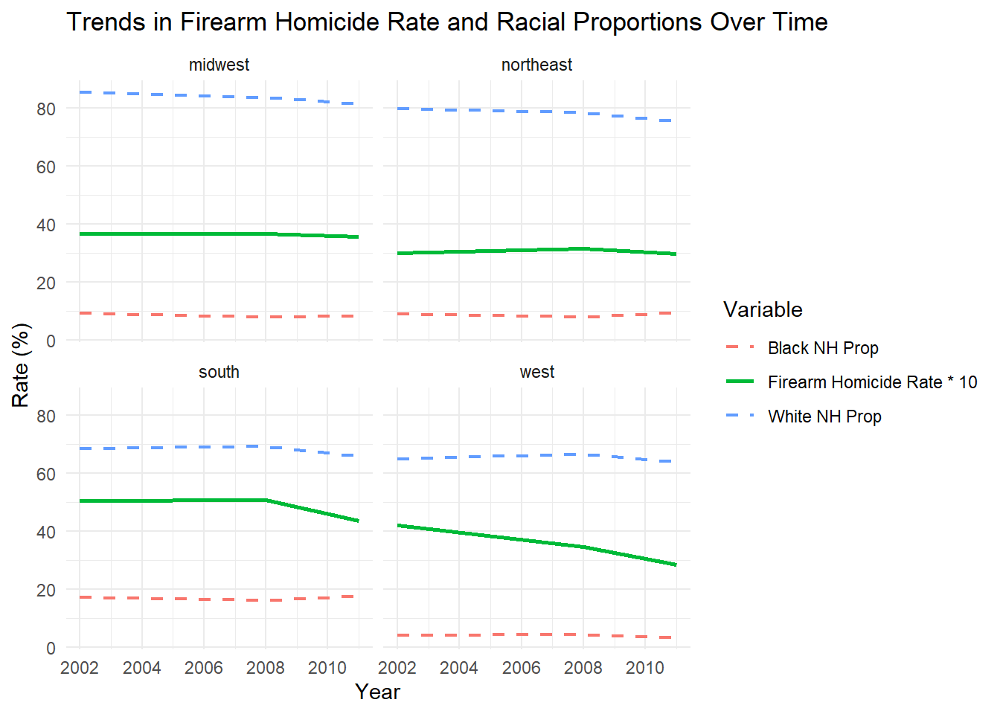

Warning: package 'DT' was built under R version 4.4.2
data <-read_rds(here::here("dataset/police_interaction.rds"))
One initial step in conducting EDA is by looking at the “PROPER” variable, which outlines whether or not the police behaved properly during the interaction, and seeing how the proportion of improper actions differs between individuals of different races.
data |>filter(!is.na(PROPER)) |>group_by(RACE) |>summarize(improper_proportion =sum(PROPER ==0) /n() ) |>ggplot(aes(x = RACE, y = improper_proportion, fill = RACE)) +geom_bar(stat ="identity") +theme(axis.text.x =element_text(angle =45, hjust =1))
This second plot is a heatmap that visualizes the correlations between various continuous variables in the dataset, where the color intensity represents the strength and direction of the correlation (with red indicating positive correlations and blue indicating negative correlations). There are notable positive correlations such as HHPOV and WORK_LW and notable negative correlations such as WORK_LW and any high-income indicator.
# Categorizing variables based on their types#removed "CONTACT" and "ERROR" due to "Warning in cor(numeric_data, use = "complete.obs") : the standard deviation is zero" errorbinary_columns <-c("MALE", "WORK_LW", "HHPOV", "PUB_HOUSE", "PUB_HOUSE_SUB", "REGION", "INPERSON", "VICAR_CITIZEN", "VICAR_PRO_AUTO", "VICAR_PRO_PERS", "VICAR_OTH_CONT", "VICAR_IMPROPER", "D_HH_P23", "PROPER")ordinal_columns <-c("C4_RACE", "MAR_STAT", "FREQ_DRV", "TENURE", "MSA_STATUS")continuous_columns <-c("AGE", "EDUCATION", "EDUCATION_SUB", "NUM_MOVES", "NUM_CONT", "HH_SIZE", "PPCS_YEAR", "N_HH_P1", "N_PERS_P1", "NUM_CITIZEN_HH", "NUM_PRO_AUTO_HH", "NUM_PRO_PERS_HH", "NUM_OTH_CONT_HH", "NUM_IMPROPER_HH")filtered <- data# Selecting data by typebinary_data <- filtered %>%select(all_of(binary_columns)) %>%select(where(is.numeric))ordinal_data <- filtered %>%select(all_of(ordinal_columns)) %>%select(where(is.numeric))continuous_data <- filtered %>%select(all_of(continuous_columns)) %>%select(where(is.numeric))# Calculating correlation matrices with appropriate methodscor_binary <-cor(binary_data, use ="pairwise.complete.obs", method ="pearson")cor_ordinal <-cor(ordinal_data, use ="pairwise.complete.obs", method ="spearman")cor_continuous <-cor(continuous_data, use ="pairwise.complete.obs", method ="pearson")# Creating a heatmap functionplot_heatmap <-function(cor_matrix, title) { cor_melted <-melt(cor_matrix)ggplot(cor_melted, aes(Var1, Var2, fill = value)) +geom_tile(color ="white") +scale_fill_gradient2(low ="blue", high ="red", mid ="white",midpoint =0, limit =c(-1, 1), name ="Correlation") +labs(title = title, x ="Variables", y ="Variables") +theme_minimal() +theme(axis.text.x =element_text(angle =90, hjust =1),axis.text.y =element_text(angle =0, vjust =1))}# Plotting heatmaps for each correlation matrixif (ncol(continuous_data) >1) {print(plot_heatmap(cor_continuous, "Correlation Heatmap of Continuous Variables"))}
For modeling, we used a linear model with an 80% split train and test set to try to predict whether someone would be arrested based on their race, years of education, if their household is living in poverty, and their gender. In the training set, the F-statistic is far over 1 and the p-values show over 95% confidence in all the response variables being significant.
split <-initial_split(filtered, prop = .8) #good way to keep yourself honest. splits it by prop % being in training, 1-prop being testtraining<-training(split)testing <-testing(split)predict_filtered <- training |>filter(!is.na(ARRESTED) &!is.na(RACE) &!is.na(EDUCATION) &!is.na(HHPOV) &!is.na(MALE))mod1 <-lm(ARRESTED ~ RACE + EDUCATION + HHPOV + MALE, predict_filtered)
In the test set, the F-statistic is much lower and the p-values and t-stats rise for each variable, with the p-value for each race variable but the intercept being over 0.1. This finding implies that there isn’t a significant relationship on average between these race categories and being arrested, although, for “Other or multiracial, Non-Hispanic”, that could be skewed by the much smaller sample size of the category compared to the other races in the category.
We added another dataset that describes the number of homicides, the number of suicides, and the number of suicides done with firearms for whites & nonwhites within different states from 1949 to 2020.
This map represents the rate of homicides by firearm by state.
firearm_data <- firearm_data |>mutate(firearm_homicide_rate =as.numeric(firearm_homicide_rate),state =tolower(state)) |>filter(!is.na(firearm_homicide_rate))us_states <-st_as_sf(maps::map("state", plot =FALSE, fill =TRUE)) %>%mutate(region =tolower(ID)) %>%# Convert state names to lowercaseselect(region, geom) # Retain only state name and geometry columnsmap_data <- us_states |>rename(state = region) |>left_join(firearm_data, by ="state")map_data$log_firearm_homicide_rate <-log(map_data$firearm_homicide_rate +1)ggplot(map_data) +geom_sf(aes(fill = log_firearm_homicide_rate), color ="black", size =0.2) +scale_fill_viridis_c(option ="plasma", name ="Homicide Rate") +theme_minimal() +labs(title ="Firearm Homicide Rate by State",fill ="Rate" ) +facet_wrap(~year)
We combined the two datasets based on locations. The first dataset was divided into four regions: Northeast, Midwest, South, and West while the second dataset was divided into different states.
We grouped data from both datasets by region and year using the regional definitions from the Census Bureau Designated Regions. For each region and year the data was summarized into categories that include proportional data for certain types of incidents related to police contact, racial distributions, homicide rate, etc.
The combination of the data is done using the code in “/scripts/load_and_clean_data.R”. Below is a table, which displays each new column and its description. Followed by the new combined data itself.
variable_table <-tibble(Variable_Name =c("region", "year", "total_count", "WHITE_NH_PROP", "B_NH_PROP", "HISPANIC_PROP", "OTHER_MULTI_NH_PROP", "CONTACT_FREQ", "OC_FRISK_PROP", "TC_FRISK_PROP", "VSRCH_PROP", "ARREST_PROP", "CUFFED_PROP", "PROPER_PROP", "IMPROPER_PROP", "AVG_CONT", "population", "fa_homicides", "nfa_homicides", "homicides", "fa_homicide_rate", "nfa_homicide_rate", "homicide_rate"),Variable_Description =c("Region the data is from", "Year the data is from", "Total number of responses in the police sentiment dataset", "White non-hispanic proportion of responses for police sentiment", "Black non-hispanic proportion of responses for police sentiment", "Hispanic proportion of responses for police sentiment survey", "Other/multiracial/Non-hispanic proportion of responses for police sentiment survey", "Proportion of responders who had contact with law enforcement", "Proportion of stop and frisks for non-traffic stops", "Proportion of stop and frisks for traffic stops", "Proportion of vehicle searchs", "Proportions of contacts that ended in arrest", "Proportion of contacts that included cuffing", "Proportion of contacts deemed handled proper", "Proportion of contacts deemed unproperly handled", "Average number of contacts in the last year", "Total region population from US census", "Number of Firearm homicides", "Number of non-firearm homicides", "number of homidides", "firearm homicides per 100,000", "non-firearm homicides per 100,000", "homicides per 100,000"))print(variable_table, n =Inf)
# A tibble: 23 × 2
Variable_Name Variable_Description
<chr> <chr>
1 region Region the data is from
2 year Year the data is from
3 total_count Total number of responses in the police sentiment dataset
4 WHITE_NH_PROP White non-hispanic proportion of responses for police se…
5 B_NH_PROP Black non-hispanic proportion of responses for police se…
6 HISPANIC_PROP Hispanic proportion of responses for police sentiment su…
7 OTHER_MULTI_NH_PROP Other/multiracial/Non-hispanic proportion of responses f…
8 CONTACT_FREQ Proportion of responders who had contact with law enforc…
9 OC_FRISK_PROP Proportion of stop and frisks for non-traffic stops
10 TC_FRISK_PROP Proportion of stop and frisks for traffic stops
11 VSRCH_PROP Proportion of vehicle searchs
12 ARREST_PROP Proportions of contacts that ended in arrest
13 CUFFED_PROP Proportion of contacts that included cuffing
14 PROPER_PROP Proportion of contacts deemed handled proper
15 IMPROPER_PROP Proportion of contacts deemed unproperly handled
16 AVG_CONT Average number of contacts in the last year
17 population Total region population from US census
18 fa_homicides Number of Firearm homicides
19 nfa_homicides Number of non-firearm homicides
20 homicides number of homidides
21 fa_homicide_rate firearm homicides per 100,000
22 nfa_homicide_rate non-firearm homicides per 100,000
23 homicide_rate homicides per 100,000
This chart normalizes racial proportions by multiplying by 100 to plot alongside homicide rates on the same scale, then multiplies firearm homicide rate by 10 to get a better understanding of what the trend looks like.
data <-read_rds(here::here("dataset", "combined_regional_data.rds"))ggplot(data, aes(x = year)) +geom_line(aes(y = fa_homicide_rate *10, color ="Firearm Homicide Rate * 10"), size =1) +geom_line(aes(y = WHITE_NH_PROP *100, color ="White NH Prop"), linetype ="dashed", size =0.8) +geom_line(aes(y = B_NH_PROP *100, color ="Black NH Prop"), linetype ="dashed", size =0.8) +facet_wrap(~ region) +labs(title ="Trends in Firearm Homicide Rate and Racial Proportions Over Time",x ="Year",y ="Rate (%)",color ="Variable" ) +theme_minimal()
Warning: Using `size` aesthetic for lines was deprecated in ggplot2 3.4.0.
ℹ Please use `linewidth` instead.

This interactive scatter plot shows the Firearm Homicide Rate relative to racial proportions of the 4 regions. Most of the firearm homicides took place in the south, with similar firearm homicide rate in the midwest and northeast, and the lowest rate of firearm homicides in the west. However, this dataset lacks data on the race of the homicide victims.
# Define server logic ----server <-function(input, output) {# Load the data# Replace this URL with the actual URL of your .rds file on GitHub Pages data <-read_rds(here::here("dataset", "combined_regional_data.rds"))# read_rds("https://sussmanbu.github.io/ma-4615-fa24-final-project-group-7/dataset/combined_regional_data.rds")# Have to configure to get this to link to the dataset# Render the interactive plot output$scatterPlot <-renderPlot({ggplot(data, aes(x = fa_homicide_rate, y = .data[[input$selected_race]])) +geom_point(aes(color =as.factor(year)), size =2, alpha =0.7) +# Use color to differentiate yearsgeom_text(aes(label = year), vjust =-1, size =3, alpha =0.8) +# Add year annotations above pointsfacet_wrap(~ region) +# Optional: Facet by regionlabs(title =paste("Firearm Homicide Rate vs", input$selected_race),x ="Firearm Homicide Rate",y ="Proportion",color ="Year" ) +theme_minimal() +theme(legend.position ="bottom", # Place legend at the bottomlegend.box ="horizontal", # Align legend items horizontallylegend.text =element_text(size =10), # Adjust legend text sizelegend.title =element_text(size =12), # Adjust legend title sizelegend.key.width =unit(1, "cm"), # Add space between legend itemslegend.spacing.x =unit(0.5, "cm") # Increase horizontal spacing ) +guides(color =guide_legend(nrow =1, byrow =TRUE) # Force a single-row legend ) })}# Define UI for the application ----ui <-fluidPage(# Application titletitlePanel("Interactive Scatter Plot: Firearm Homicide Rate and Racial Proportions"),# Sidebar layout with input and outputsidebarLayout(# Sidebar panel for inputssidebarPanel(# Dropdown menu for selecting racial groupselectInput(inputId ="selected_race",label ="Select a Racial Group:",choices =c("White NH"="WHITE_NH_PROP","Black NH"="B_NH_PROP","Hispanic"="HISPANIC_PROP","Other/Multi NH"="OTHER_MULTI_NH_PROP" ),selected ="WHITE_NH_PROP" ) ),# Main panel for displaying outputsmainPanel(plotOutput(outputId ="scatterPlot") ) ))# Run the application ----shinyApp(ui = ui, server = server)
Shiny applications not supported in static R Markdown documents
# Define the server logicserver <-function(input, output) {# Simulated example dataset (replace with actual dataset) data <-data.frame(year =rep(2000:2020, each =4),region =rep(c("North", "South", "East", "West"), times =21),fa_homicide_rate =runif(84, 0, 10),WHITE_NH_PROP =runif(84, 0, 1),B_NH_PROP =runif(84, 0, 1),HISPANIC_PROP =runif(84, 0, 1),OTHER_MULTI_NH_PROP =runif(84, 0, 1) )# Reactive filtered data filtered_data <-reactive({ data %>%filter(year >=2000& year <=2020) %>%filter(region %in%c("North", "South", "East", "West")) })# Render the summary table output$summaryTable <- DT::renderDataTable({filtered_data() %>%summarise(`Mean Homicide Rate`=mean(fa_homicide_rate, na.rm =TRUE),`Median Homicide Rate`=median(fa_homicide_rate, na.rm =TRUE),`Std Dev Homicide Rate`=sd(fa_homicide_rate, na.rm =TRUE),`Mean Proportion`=mean(.data[[input$selected_race]], na.rm =TRUE),`Median Proportion`=median(.data[[input$selected_race]], na.rm =TRUE),`Std Dev Proportion`=sd(.data[[input$selected_race]], na.rm =TRUE) ) })}# Define the UIui <-fluidPage(titlePanel("Shiny App with Summary Table"),sidebarLayout(sidebarPanel(selectInput(inputId ="selected_race",label ="Select a Racial Group:",choices =c("White NH"="WHITE_NH_PROP","Black NH"="B_NH_PROP","Hispanic"="HISPANIC_PROP","Other/Multi NH"="OTHER_MULTI_NH_PROP" ),selected ="WHITE_NH_PROP" ) ),mainPanel(tabsetPanel(tabPanel("Summary Table", DT::dataTableOutput(outputId ="summaryTable")) ) ) ))# Run the applicationshinyApp(ui = ui, server = server)
Shiny applications not supported in static R Markdown documents
 Loading our Police Interaction dataset and all libraries.
Loading our Police Interaction dataset and all libraries.